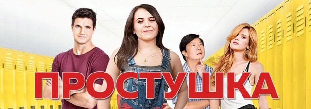
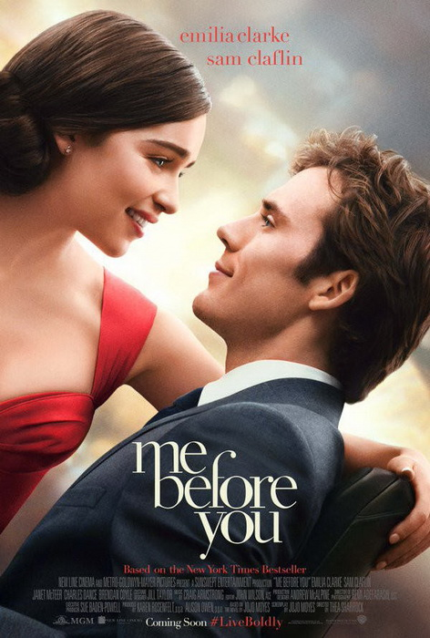
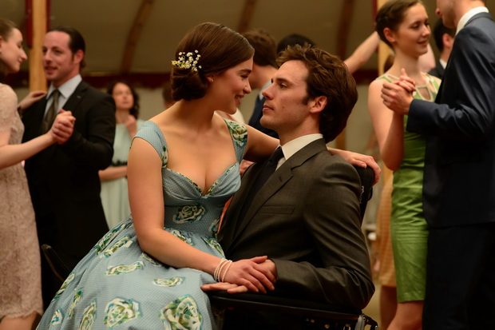

Ні для кого не секрет, що у старшій школі на учнів часто вішають "ярлики". Старшокласниця Б'янка навіть не здогадувалася, що для своїх подруг вона лише "товста негарна подружка", на чиєму фоні вони виглядають крутішими. Про це Б'янка дізнається від найпопулярнішого хлопця в школі – Уеслі Раша. Тоді вона вирішує позбутися цього "ярлика" будь-якою ціною. Чому варто подивитися? Бо це дуже цікава комедія, яка показує, як справитися з насмішками крутих. Та й історії про перевтілення дуже мотивують.

Прем'єра фільму в Україні: 7 березня
Режисер: Анна Боден, Райан Флек
Оригінальна назва: Captain Marvel
Фільм розповідає про жінку-супергероїню, яка володіє унікальними здібностями. Усі події відбуваються у 1990-х роках. Стрічка детально розповідає, як пілот ВПС США через злиття з ДНК воїна інопланетної раси Кріі стала супергероєм Капітаном Марвел та отримала надздібності. В головній ролі фільму постає голлівудська актриса Брі Ларсон.

Британська мелодрама «До зустрічі з тобою» (2016) була знята за сюжетом однойменного роману Джоджо Мойес.Лу Кларк знає, що їй подобається її робота і що Патрика, свого бойфренда, швидше за все, вона не любить. Але от про те, що скоро очікуються зміни, що вона залишиться без роботи, ні, не здогадується.Уілл Трейнор знає, що зробило його нещасним – дорожня аварія. Але от про те, що Лу скоро стане частиною його життя, ні. І героям судилося змінити життя один одного.
